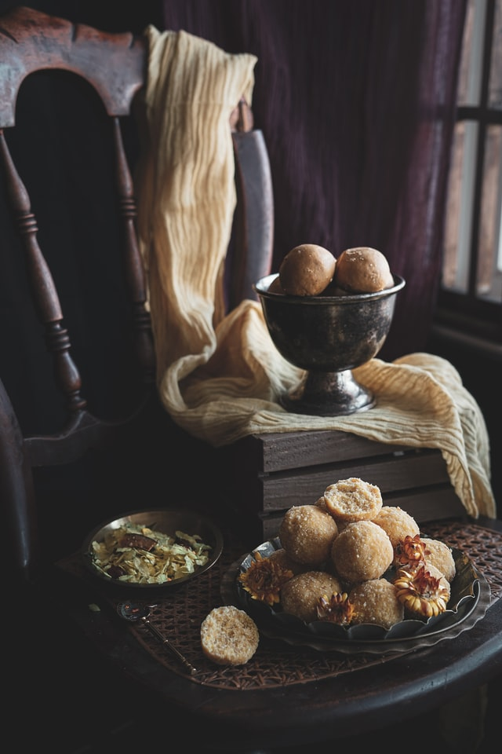

There are numerous festivals in India and thus, followed by, many mouth-watering and jaw-dropping sweets and meals. Special dishes are prepared and also offered to the respective God(s) and seasons play a very important role in celebrations of different festivals. Here are some of the major food delicacies that every person loves to get their mouth on.
